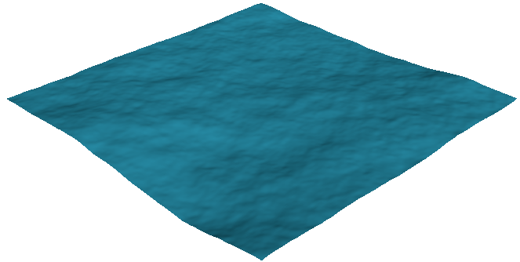
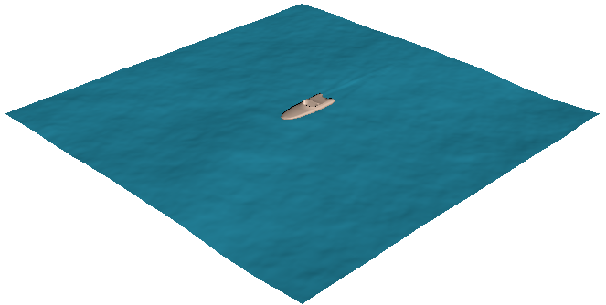

下面简要概述了使用 Bifrost 海洋模拟系统创建海洋表面的步骤。
- 以新场景开始。
- 检查设置首选项，并确保“线性”(Linear)工作单位设置为“厘米”(centimeter)（默认设置）。
与 Maya 中的其他动力学相关工具一样，BOSS 假定比例为 1 厘米 = 1 米。通过将设置保留为默认值，并按此比例为对象建模，您可以确保一致的结果，而无需更改重力或进行其他调整。
- 创建一个约 50 个单位长和 50 个单位宽的多边形网格平面，居中放置在世界原点。这对应于一片 50 m × 50 m 的水域。
- 确保该平面具有大量细分 - 至少 200 × 200 或更高，以允许更多细节。
- 通过从 FX 菜单集中选择，打开“BOSS 涟漪/波浪解算器”(Boss Ripple/Wave Solver)。有关详细信息，请参见 BOSS 编辑器概述。
注： 通常，默认情况下加载 BOSS 插件。如果 FX 菜单集中未显示 Boss 菜单，则插件可能已卸载。您可以使用“插件管理器”(Plug-in Manager)加载 Boss.mll。请参见加载或卸载 Maya 插件。
- 选择该平面，并单击
 “创建光谱波浪”(Create Spectral Waves)。有关详细信息，请参见添加和编辑 BOSS 解算器。
“创建光谱波浪”(Create Spectral Waves)。有关详细信息，请参见添加和编辑 BOSS 解算器。
默认情况下，“开始帧”(Start Frame)为 2，因此没有变形。
- 前进到第 2 帧。现在应该可以看到生成的变形。

- 在 BossSpectralWave1 属性中，将“面片大小 X (m)”(Patch Size X (m))和“面片大小 Y (m)”(Patch Size Y (m))设置为 50。通过在世界空间中匹配平面的实际大小，您可以计算网格以外区域的变形值，确保不会浪费计算时间和内存。
因为随机数的分布不同，所以变形发生变化。此外，由于较长的波长不适合较小的面片，因此最大垂直置换有点小。
- 播放场景以查看动画。
以下步骤将添加碰撞对象以便与曲面变形进行交互。 另请参见：添加船尾迹（视频）。
- 打开内容浏览器(Content Browser)。在“示例”(Examples)选项卡上，导航到 建模/雕刻基础网格/车辆 并导入 SportsBoat.ma。
- 船网格对于场景太大，所以按 0.01 和 0.02 之间的因子缩小。您可以删除马达网格。
- 制作船网格的动画，以便在 5 秒钟时间内沿 Z 轴从约 -20 移动到 +20（120 帧，24 fps）。
为获得真实的效果，应该使用接近于现实世界速度的值。在这种情况下，平均速度 8 m/s 大致相当于 16 结，这是合理的速度，但对摩托艇来说不是特别快。
- 选择船网格，然后单击“Boss 涟漪/波浪解算器”(Boss Ripple/Wave Solver)窗口中的 。有关详细信息，请参见添加和编辑 BOSS 影响。
- 再次播放。您应该看到船后面的尾迹。

- 继续调整设置并根据需要播放。
特别是，整个海洋状态（波浪和浪涌）的主要控制是“风速(m/s)”(Windspeed (m/s))和“风吹程距离(km)”(Wind Fetch Distance (km))。您还可以调整“波高度”(Wave Height)以扩大或衰减垂直置换。
- （可选）如果对解算器和影响的效果感到满意，您可以单击 将其缓存为 EXR 文件，从而加快播放速度。有关详细信息，请参见缓存 BOSS 解算器和影响。
还可以在渲染时将缓存的 EXR 文件用作向量置换贴图。请参见将 BOSS 缓存作为置换贴图应用。